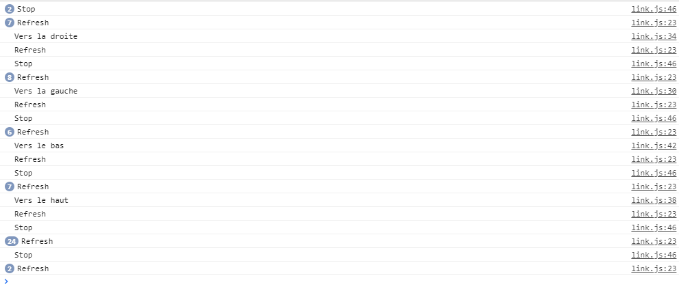

Vous allez pouvoir commencer vos scripts.
Dans le fichier link, vous allez comencer par créer un objet qui représentera votre personnage :
var link = new Object();
A partir de là, vous pouvez ajouter des propriétés à votre objet en écrivant simplement quelque chose comme :
link.propriete = valeur;
Ou même lui ajouter des méthodes en écrivant quelque chose comme :
link.methode = function(){...};
En remplacant "propriete" et "methode" par le nom que vous voulez donner à votre propriété ou méthode.
Pour link vous allez avoir besoin des propriétés suivantes :
Et il vous faudra les méthodes suivantes :
Une fois ces méthodes créées, contentez vous, pour le moment, de leur demander de faire des console.log('Votre description'), afin de pouvoir les tester.
C'est le seul vrai morceau de développement de cette étape. Vous allez devoir créer déjà le moteur de jeu et lui demander d'exploiter les méthodes que vous avez créé précédemment.
Le moteur s'articule uniquement autour de trois élémentss de code :
Il doit lancer une fonction toutes les 100 millisecondes (vous pouvez changer cette valeur) qui elle-même lance la méthode "refresh" de link. Mieux vaut passer par une fonction intermédiaire, car il y'aura d'autres choses à faire ici plus tard.
Il doit lancer une fonction (nommez-la comme bon vous semble, qui récupère l'évènement "evt", et regarde dans cet évènement la propriétés "key". Celle-ci contient le nom de la touche sur laquele on a appuyé. Il est alors facile de demander à link de bouger dans la bonne direction.
Exemple :
function keyDown(evt) {
switch (evt.key) {
case '???' :
link.moveRight();
...
}
}
A vous de trouver les bons codes ici, regardez la doc.
Lui doit lancer une autre fonction qui elle même se contente de demander à link de s'arrêter grâce à sa méthode "stop()".
Si tout est bien réalisé, vous devriez avoir des logs affichant toutes les actions de votre personnage, comme suit :
L'ordre n'a aucune importance car il dépend de votre timer et de vos interactions avec le clavier